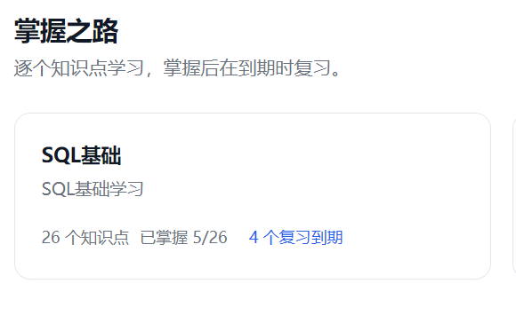
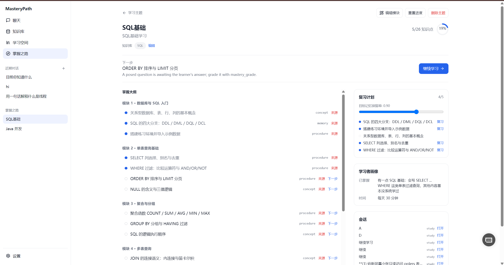
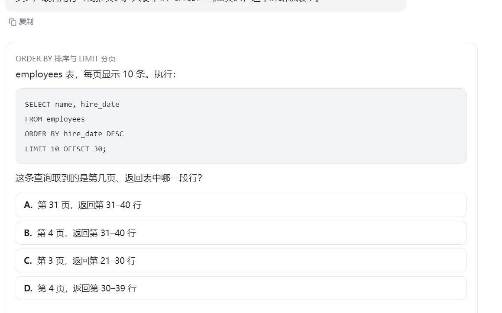
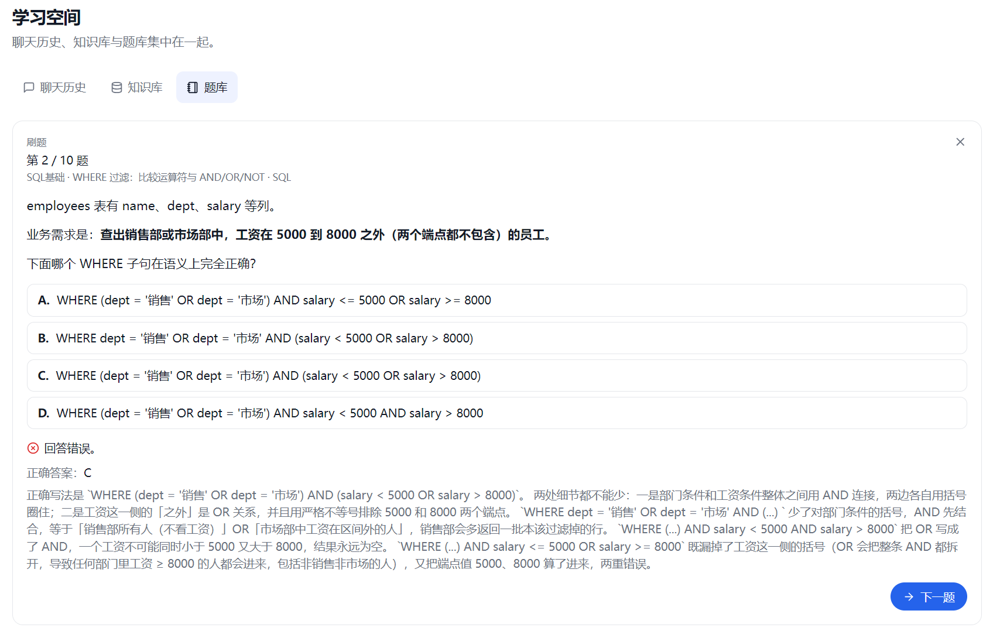
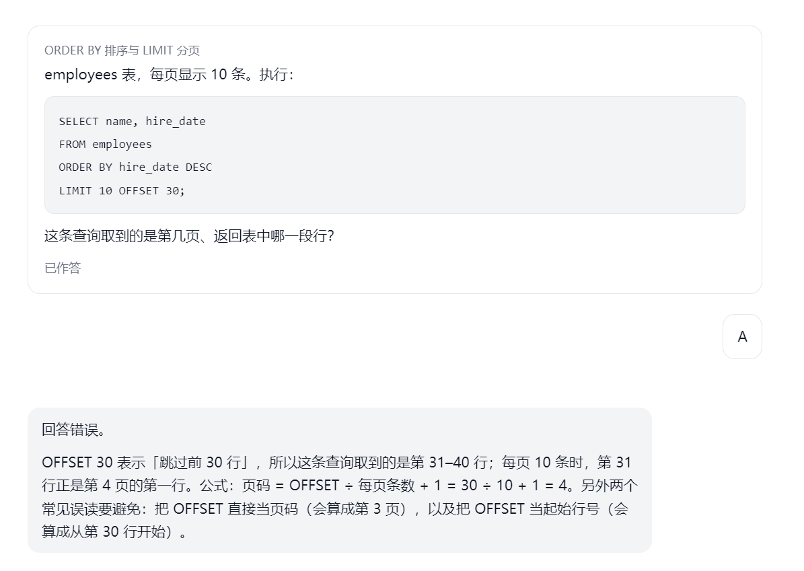

系统分析与设计 · 第二部分
MasteryPath
精通之路
System Design of an Agentic Mastery Learning System
以知识地图为中心的掌握式学习智能体
教学交给模型，推进交给引擎
王君逸 · 程攀 · 卫梓豪 · 王沛璁
01 需求与痛点
资料并不缺，缺的是"学到哪、算不算会"
自学卡住的地方，不在信息获取，而在路径、判据与遗忘。
学习者在什么时候卡住
「资料收藏了一堆，不知道从哪开始。」
目标模糊，路径靠感觉；收藏不等于路线。
「看完了感觉懂了，一合上书就忘。」
流利错觉：重复阅读制造"会了"的体感，却不带来保持。
「做了题，错了也不知道该不该往下学。」
没有判据，推进只能靠自我感觉。
现有工具能帮到哪一步
笔记 / 资料库
能存资料、能双链——但不排路径，也不判断是否掌握。
刷题 App
能出题、能对答案——题海驱动，不排复习、不看类型。
Anki / SuperMemo
能排间隔复习——卡片要自己造，没有地图与讲解。
没有一个工具把"地图—学习—检验—复习"连成闭环
而"是否掌握"这件事，目前几乎全靠用户自己说。
地图是唯一真相源；题目、证据、复习都围绕它发生。
MasteryPath 帮学习者完成什么
一张地图 模块 + 知识点
记忆 / 程序 / 概念 / 设计——类型决定"什么叫会"，创建后只读。
三种模式 大纲 / 学习 / 复习
能力由后端调用期门控，不只禁用按钮；工具不归类，服务直接起不来。
一个判据 0.9 或定性通过
判分、门槛、调度全部零模型调用——模型可以教，不能放行。
相比第一部分，需求变了三处
新增练习卷（不计入掌握）· 题卡事件权威化（刷新不丢卡）· 知识库与主题多对多。
原因：单题回合无法支撑考前自测，而刷卷不能变成刷分。
两条动线，共用题库与知识库
掌握之路（写掌握分）
地图4 类知识点
›
讲 / 考单槽位出题
›
判分0.9 或定性
›
复习SM-2 排期
刷题（不写掌握分）
题库判分后入库
›
筛选标签 / 知识库
›
刷题10 题 · 即时判
›
练习卷1–10 题
分界：只有掌握之路写掌握分与证据；刷题与练习卷只回写该题作答，不进复习队列。
图集与仪表盘只读投影；工作区才产生写事务；刷题只回写该题作答。

图集：我有哪些主题、几个到期

仪表盘：这个主题到哪了

题卡：一次一道，作答是下一条消息

刷题：从题库抽题，即时判分
读侧无模型：图集与仪表盘只读聚合投影；写侧有门控：只有工作区会产生写事务。
02 三个关键设计权衡
三条决策决定系统"不会坏在哪"
每条都对应一种具体的失败模式；写清代价，而不是只写选择。
| 权衡维度 | 约束（为什么会坏） | 我们的选择与代价 |
|---|
| 权衡 1判定权归属 |
模型输出的两次自评不一致，无法回归；若门槛由模型判，"掌握"就不可复核。 |
判定下沉到 domain 纯函数：判分 / 门槛 / 门控 / 调度零模型调用。
代价：规则改动必须走代码 + ADR；定性评估仍是唯一的"半确定性"边界。 |
| 权衡 2状态一致性 |
一次出题要同时写待答题、题目事务、事件；一次判分要同时写作答、证据、掌握度、复习队列——分表多写必留脏状态。 |
单聚合 + version CAS + 事件同 revision；一次工具调用 = 一次写事务。
代价：聚合随路径变大有写放大；读-改-写期间无法跨聚合事务。 |
| 权衡 3能力边界 |
23 个工具 × 3 种模式 = 69 种组合，UI 只能表达 3 个模式按钮；越权一旦发生，事后无法追溯意图。 |
静态分类表 + 调用期门控 + fail-closed：未归类工具启动即失败；条件挂载让模型看不到无效工具。
代价：分类表与 schema 需双写；越权拒绝会消耗一次预算。 |
共同点：三条都把"不可靠的判断"换成"可断言的结构"——这正是评审时最容易被追问的地方。
02 智能体架构
提示只读快照，事实只由一次写事务产生
智能体不是一个"会说话的模型"，而是一条从事件流到聚合的受控调用链：读侧装配上下文，写侧只有一条路。
一次回合穿过五层
传输
WS / REST
WsTurnHandler 只做解析与转发：一次连接一条请求，事件逐帧推送
▼
回合装配
TurnRunner
读侧全部在这里：状态快照 + 最近 6 张卡复盘 + ≤20 条历史 + 8 块提示 + 挂载后的工具表
▼
循环
AgentLoop
≤6 轮 · ≤6 次工具 · 出题即收尾；只产事件，不写库
▼
工具层
23 个
schema 校验 → 模式门控 → 预算 → 调 service；不直接改状态
▼
服务
LearningService
唯一写入口：一次工具调用 = 一次 mutate；校验、派生、发事件都在这层
▼
存储
LearningStore
读版本 → 改聚合 → WHERE version=v 写回；冲突重试 ≤3，事件同 revision 入账
读侧（提示）：快照是派生数据，每轮重新装配，永不回写。写侧（工具）：只有 service 能改聚合，工具与 Loop 都没有写权限。
一次写事务的四个动作
STEP 1
校验
模式归属、预算、单槽位、前置条件——拒绝发生在写之前。
STEP 2
读
取聚合与当前 version；读不到就不创建（除显式建档）。
STEP 3
改
就地修改 + 事件入内存队列；不落盘，不影响其他读者。
STEP 4
写
版本比对成功才提交；事件随新 revision 批量落库，失败整体回滚。
一条聚合，七张旁路表
真相：paths（聚合 JSON + version）。
旁路：事件（审计）· 题目事务（幂等锚点）· 题库（读模型）· 会话与消息（对话记忆）· 题卷与题目（练习域）。
旁路表都可以从聚合重建，但从不反向写回。
03 技术选型
每个选型都换来一个结构性质，也带来一个代价
"设想 → 现状 → 换来了什么 → 代价/待验证"，最后一列是第三部分要回答的问题。
| 层 | Part I 设想 | 当前实现 |
换来了什么 | 代价 / 待验证 |
| 界面与交互 | Next.js 三模式工作区 | Next.js 14 + Tailwind 语义令牌 | 三层动线；状态用"填充/环/描边"表达，不只靠颜色 | 暗色主题、移动端编辑 |
| 回合与智能体 | 通用 Agent Loop | 自写 Loop + 23 工具 + 四类结束原因 | 事件顺序可断言；成本有上界；失败可解释 | 提示与工具契约漂移 |
| 判定与调度 | 规则引擎 + SM-2 | domain 纯函数，零模型调用 | 离线可逐值断言；时间不再隐式（now 显式传入） | 0.9 / 0.90 阈值标定 |
| 存储与一致性 | SQLite + CAS | 单聚合 JSON + version CAS + 8 张表 | 读一次拿全量；事件与状态同 revision 可对账 | 60 个知识点时的写放大 |
| 模型接入 | 供应商无关 | OpenAI 兼容 SSE + 脚本化假客户端 | tool_calls 按 index 拼装；错误分类可控；测试离线 | 非兼容协议、工具选择准确率 |
JDK 21 · Spring Boot 3.5 · Maven Wrapper｜SQLite（WAL，单写者）｜Jackson｜JUnit 5 + AssertJ｜数据目录 data/（两库 + 一 JSON + 一目录）
03 容器架构
两个进程、一个目录，模型是可拔掉的插件
单机本地优先：不配模型也能跑"出题 → 判分 → 掌握 → 复习"。
一次 WS 请求 = 1 次写入会话 + N 次模型调用（N ≤ 6）+ M 次写事务：每次写工具最多 1 次 mutate，读工具 0 次；因此"回合成本"与"数据库写入次数"都是可计数的。
实线 已实现 · 虚线 待 PoC 验证
03 交互设计
把"不确定的生成"收束成一条有序事件流
回合的价值不在文本，而在六步之内状态如何变化；下面三条顺序是硬约束。
01 装配
读侧就绪
快照 + 复盘 + 历史 + 工具表，一次装配
›
02 模型轮
流式产出
文本增量即时透传，工具调用累积
›
03 工具
校验后执行
先发 tool_call 再执行；失败不毒化回合
›
04 收口
出题即结束
以 turn_end(card) 收尾，等学习者作答
›
05 通知
session_meta
模式/路径若变，在 turn_end 之后推送
›
06 落库
best-effort
消息入历史；失败不回滚已完成的状态

① 题卡不含答案 ② 判分先于讲解 ③ 作答是下一条消息
顺序约束 1
作答先判分，再让导师开口
携带 mastery_answer 的回合，先判分并以 tool_result 回传；模型看不到未判分的答案。
顺序约束 2
题卡是 tool_result 的投影
question_card 从工具结果的 metadata 派生；投影剔除答案，事件与历史共用同一份卡片。
顺序约束 3
session_meta 在 turn_end 之后
模式或路径可能被工具中途改掉；前端必须先收到"回合结束"，再收到"现在是什么模式"。
失败路径：模型错误或流中断 → 保留已产出的文本与题卡 → 发 error(code, retryable)，不发 turn_end；题卷路径例外（error + turn_end(error)），因为整卷是一次性产物。四类正常结束原因：done / card / budget / max_rounds。
设计已落地为可运行系统；真正不确定的是"阈值、契约同步、生成质量、单机上限"。
已完成并验证
三模式闭环与回合协议
大纲共创 → 讲与考 → 到期复习；事件顺序、失败保留、模式回写均有契约测试。
23 个工具与两层门控
调用期门控 + 会话准入（学习需已有大纲）；分类表 fail-closed，未归类启动失败。
确定性判定与单聚合一致性
判分 / 门槛 / SM-2 纯函数；CAS 重试、事件同 revision、判分幂等。
题库、知识库、设置与评测
题库标签与刷题、文件夹来源与检索、提供方探测、大纲离线评测。
证据：93 个测试文件 / 864 条用例 · G0–G7 八个 Gate · 投影契约与并发用例
待完成与待验证
提示与工具契约的漂移
提示包引用了 ask_user 与 visual 参数，但工具注册表与 schema 里没有——模型照做会得到 unknown tool。
阈值标定
0.9 / 0.90 / 0.60 / EF 2.5 都还是先验值，没有用真实作答校准。
生成质量与练习卷可用率
大纲 F1、有界性、无环；题卷结构合法率与"修复一次"的救回率。
单机上限与密钥保护
并发写、聚合写放大；无鉴权 + 明文 Key 的产品边界。
下一步：第三部分用 PoC 把右侧四条变成数字
04 待验证的问题
四个问题决定它是不是真的"好用"
每个问题都给出方法与判据——不达标就改设计，而不是改说法。
01 产品价值
0.9 的门槛，会不会让正常人卡住？
收集 200 条真实作答，两人独立双盲标注（对 / 错 / 无法判定），与引擎结论逐条比对。
判据：一致率 ≥90% · 误判为正确 ≤2%
02 契约同步
提示与工具不同步时，模型会怎么退化？
用脚本化假设模型故意调用不存在的能力，观察拒绝路径、回合是否继续、用户是否被误导；再补一份"提示—schema"一致性检查。
判据：0 次静默失败 · 拒绝文案可操作
03 生成质量
大纲与题卷守得住吗？
30 个领域目标跑离线评测 CLI；20 次题卷生成统计结构合法率与"修复一次"的救回率。
判据：F1 ≥0.8 · 无环 · 题卷合法率 ≥90%
04 架构上限
单机单进程，能撑到什么程度？
5 个并发写 + 持续读，观察 CAS 冲突率、写放大与读接口 P95；再测 60 个知识点路径的写延迟。
判据：P95 ≤300ms · 冲突重试率 <5%
感谢聆听！
王君逸 · 程攀 · 卫梓豪 · 王沛璁
完整设计工件：docs/design/（9 份工件 · 15 条 ADR · 15 条风险 · 12 个未决问题）